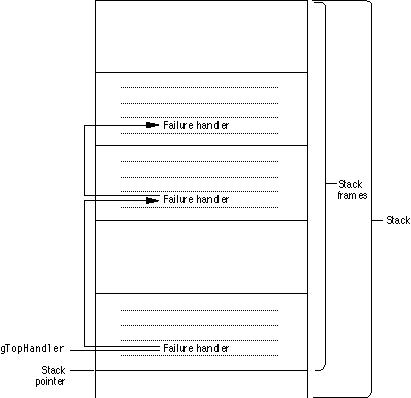

Failure Handling
MacApp provides a failure-handling mechanism that allows your application to clean up after errors. An application can install failure handlers at multiple points. Failure handlers are declared as local variables, and so are stored on the stack. MacApp connects them into a linked list, with each handler pointing to the next handler in the list, as shown in Figure 3-2. A global variable,gTopHandler, points to the most recently stored failure handler.Figure 3-2 A linked list of failure handlers, stored on the stack

When an error occurs, the most recent failure handler is retrieved, the previous state of the machine is restored, and execution continues at the location specified by the handler. Optionally, the failure handler may call a specific cleanup routine. On completion, the failure-handling code may return to regular program execution or it may propagate the failure by calling the
ReSignalmethod to retrieve the next failure handler from the list.You install a failure handler by using the
Trymacro to bracket code where an error might occur. You follow theTrybranch with code to handle the anticipated failure. For example, you can use a failure handler to bracket a memory allocation loop. If an allocation fails, the failure handler jumps to code that frees any memory that has already been allocated. If no error occurs, you call a method to remove the failure handler from the linked list of failure handlers.Failure handling is described in greater detail in the following sections. For additional code samples and information on how to use failure handlers in your application, see Chapter 24, "Working With Memory and Failure Handling."
The Failure Routine
References to failure handlers are kept in a linked list, pointed to by a global variable,gTopHandler, as shown in Figure 3-2. Each item in the list is an object of typeFailInfo, described in the next section.FailInfoobjects are declared in the routines that use them, so they are stored on the stack.When you call the
Failureroutine, it retrieves the most recent failure handler from the list, then calls the handler's cleanup routine, if it has one. If the failure handler doesn't have a cleanup routine (most don't),Failurecallslongjmp, passing the saved state buffer, to restore the previous machine state.MacApp supplies routines that check for specific types of errors and call
Failureif they find one. The names of these routines reflect the kind of error they check for:FailNIL,FailNILResource,FailMemError,FailOSErr,FailResError,FailNoReserve, andFailSpaceIsLow. For more information, see "MacApp Error-Checking Routines," beginning on page 562.An application can use these MacApp routines, or it can check for an error condition itself and call
Failuredirectly when it detects an error.The FailInfo Class
MacApp defines theFailInfoclass to implement failure handlers.FailInfoincludes these features:The following code fragment demonstrates how a failure handler is installed:
- a pointer to the next failure handler
- a buffer to save the current machine state
- a reference to a cleanup procedure; if the reference is not
NULL, the procedure is called to clean up after an error instead of using the machine state buffer to jump to the error-handling code- a
Successmethod to remove the failure handler from the list when no error occurs- a
ReSignalmethod to execute the next failure handler in the list// Declare a failure handler. FailInfo theFailureHandler; // Insert the failure handler in the global list. Try(theFailureHandler) { // Code that may cause a failure. . . . // If no failure occurs, remove the failure handler. theFailureHandler.Success(); } else { // Code to clean up if an error occurs. . . . // In this case, pass error on to next handler. theFailureHandler.ReSignal(); }The macroTry, described in the next section, is executed first. It inserts the failure handler in the list and callssetjmp. If no error occurs, the call toSuccessremoves the failure handler from the list.If an error does occur, the failure handler is processed and causes execution to continue with the
elseblock of code. If no error occurs, theelseblock is never executed and the call toSuccessremoves the error handler from the list.Note that the call to
ReSignal, which retrieves the next failure handler from the list and jumps to the location it specifies, is not always necessary--the local code may handle the error condition completely.The Try Macro
Tryis implemented as a macro rather than as a method of theFailInfoclass, because the failure-handling code must be inline to properly save the desired machine state. The decision whether or not to put code inline is handled differently by different compilers and can be affected by options such as symbol generation and optimization level. ImplementingTryas a macro takes the decision away from the compiler.Saving and Restoring the Machine State
When a failure handler is initialized, MacApp inserts it in the linked list of failure handlers and calls the C library routinesetjmpto save the current machine state in the failure handler's buffer. When a failure occurs, MacApp removes the most recent failure handler from the linked list and calls thelongjmproutine to restore the saved state. The application resumes execution as if it had just returned from thesetjmpcall. The call chain also returns to its previous state, and return statements for any intervening calls are eliminated.Calling Success to Remove a Failure Handler From the List
CallingSuccessremoves a failure handler when it is no longer needed. Failing to callSuccessthe same number of times you callTrycauses a failure handler to be left in the list. This can lead to a program crash for one of two reasons:An application built with MacApp's debugging support issues a warning if
- The failure handler's saved machine state is no longer valid. If the failure handler is invoked by a subsequent error, program execution will jump to an invalid location.
- Failure handler variables are declared locally and so are stored on the stack. If a failure handler is not removed from the stack before the routine that created it goes out of scope, the failure handler may be overwritten.
Successis not called as often asTry.The MAVolatile and MAVolatileInit Macros
A C++ compiler can optimize code by storing local variables in registers. Doing so can cause problems during failure handling becauselongjmprestores registers to the values they had before the error occurred. Thus a variable you wish to use in your recovery code may be set to an incorrect value.MacApp supplies the
MAVolatilemacro to ensure that a variable is kept out of a register.MAVolatilecan be called on a variable of any type and is guaranteed to work on any compiler, even those that don't support thevolatilekeyword. You supply a variable and a type, as in the following line:MAVolatile(Boolean, pictureIsOpen);TheMAVolatileInitmacro is a variation onMAVolatilethat both initializes a variable and ensures that it won't be stored in a register. Here you supply a type, a variable, and an initial value. For example, the codeMAVolatileInit(THandleList*, aHandleList, NULL);initializes the variableaHandleListtoNULLand guarantees that it won't be stored in a register.
- IMPORTANT
- Don't use the volatile macros with data that will be passed by address or by reference--it won't work without casting or changing the called function to expect a volatile parameter, and it isn't necessary.
Failure Handling Embedded in Objects
MacApp provides a number of classes with embedded failure handling, includingCArrayIterator,CTemporaryRegion, andCTempDesc.Each of these classes has a
FailInfofield,fFailInfo, which provides failure handling for the class. These classes provide an example of how to embed failure handling in an object and use a cleanup procedure to handle any failure.When an array iterator is initialized, the
IArrayIteratormethod sets up the iterator'sfFailInfofield by making the following calls:fFailInfo.Reset(); fFailInfo->SetCleanupProc(CArrayIterator::CallCleanup, this);TheResetmethod sets the failure handler to a safe initial state. TheSetCleanupProcmethod inserts the failure handler in the list and sets its cleanup procedure to the iterator'sCallCleanupmethod.When a failure occurs, MacApp's
Failureroutine retrieves the first failure handler from the list and calls its cleanup procedure, if it has one. In this case it calls the array iterator'sCallCleanupmethod, which in turn calls the iterator'sCleanupmethod.Cleanupfrees the iterator's dynamic storage, if necessary. If no failure occurs, the destructor method,~CArrayIterator, callsSuccessto remove the failure handler from the list. (Iterators are discussed in "Lists and Iteration," beginning on page 61.)You may notice examples in the MacApp class library where an extra code block is inserted around the creation of an iterator object in a situation that requires failure handling. This is done to control the creation and destruction of the iterator's embedded failure handler. By specifically controlling the scope in which the iterator exists, there is no ambiguity about when the iterator is deleted and its failure handler is removed from the list. In addition, controlling the scope may be more efficient and require fewer failure handlers to exist at one time.
The following sample shows how to introduce an extra code block to control the scope of a failure handler embedded in an iterator.
FailInfo firstFailureHandler; Try(firstFailureHandler) { // Code that fails here is caught by the first failure handler. // Add an extra block here to control destruction of iterator. { // Note: iterator's constructor installs a failure handler. CObjectIterator iter(aFileList); for (aFile = (TFile *)iter.FirstObject(); iter.More() && !savedError; aFile = (TFile *)iter.NextObject()) { // Code to open a document for each file in the list. // Could run out of memory or experience a file error. // Code that fails here is caught by the "iter" object's // embedded failure handler. } // End for loop } // End extra block. The iterator goes out of scope and // its destructor removes its embedded failure handler // from the linked list of failure handlers. // Could have more code here. } // End Try for firstFailureHandler. else { // Error recovery code for firstFailureHandler block. }When the code reaches the end of the extra block, the iterator goes out of scope and its destructor callsSuccessto remove the embedded failure handler from the list.